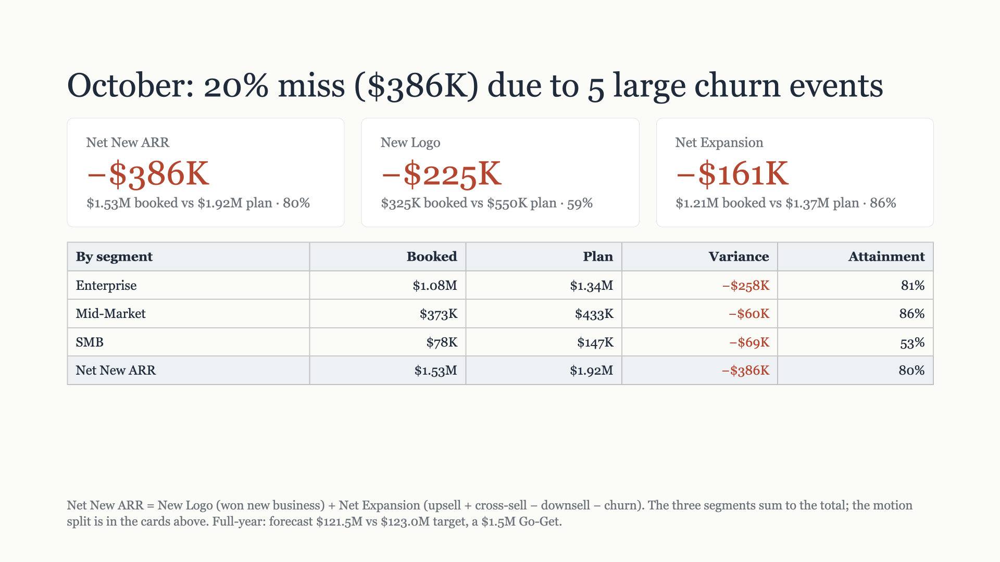

Part 1 is your setup, in order, with the exact values and a check for each step. Part 2 is what a CRO sees after clicking the link in your DM, and what Pacer records at each step. Status as of 10 Nov 2026, 13:21 MT.
/day-1-brief-pdfversion 4714166aDo these in order. Steps 1 to 3 are WP Admin. Tick each as you go; the ticks stay in this browser only.
0 of 6 done
The PDF email links getpacerai.com/day-1-brief-pdf/, which returns 404 today. This is also step 2 of the PAC-221 post's deploy, so doing it now covers that.
WP Admin → Tools → Redirection → Add new:
/day-1-brief-pdf/, with Ignore Slash onhttps://getpacerai.com/wp-content/uploads/2026/11/pacer-ai-day-1-sales-review-october-2026.pdfCheck: a 302 whose location is the PDF.
curl -sI https://getpacerai.com/day-1-brief-pdf/ | grep -iE '^HTTP|^location'
WP Admin → Code Snippets → Header & Footer. Click in the Footer box, select all, copy. Then save the clipboard to a file:
pbpaste > ~/Documents/pacerai/pacerai-website/docs/review/wpcode-footer-before-20261110.txt && shasum -a 256 ~/Documents/pacerai/pacerai-website/docs/review/wpcode-footer-before-20261110.txt | cut -c1-12
Expect: 54ba22069572, the footer pasted on 22 Oct. A different value can be just a trailing newline from the copy. Keep the file either way.
Copy main's paste file to the clipboard and check it before pasting:
cd ~/Documents/pacerai/pacerai-website && git fetch -q origin main && git show origin/main:src/wpcode/footer.paste.txt | pbcopy && pbpaste | shasum -a 256 | cut -c1-16
Expect: 30b1e81659090701 (24,520 bytes). Select all in the Footer box, paste, Save Changes.
Check: in a private window open the tagged page below, then run this in the DevTools console. Every line should end in the tag.
https://getpacerai.com/demo-connect/?utm_source=linkedin&utm_medium=dm&utm_campaign=day1-brief
[...document.querySelectorAll('a[href*="claude.ai/customize/connectors"]')].map(a => new URL(a.href).searchParams.get('connectorUrl'))Then open the homepage and check the console shows no red errors. Rollback: paste the file from step 2 back and save.
No page frames the form until the PAC-221 post ships, so open it on the Worker directly and use a @getpacerai.com address:
https://pacer-demo-worker.will-078.workers.dev/day-1-brief-pdf
orders@mail.getpacerai.com: "October's Day 1 brief, as a PDF". Its link opens the 13-page PDF.A second request within 10 minutes sends no email; Slack marks it "repeat request". That's expected.
A private window, signed in to a Claude account that has never added Pacer AI - Demo. Open the tagged link from step 3, then follow Part 2 below:
?utm_source=linkedin&utm_medium=dm&utm_campaign=day1-brief.If claude.ai refuses the tagged URL: roll back the footer (step 3) and raise it on the platform. The plain link still works.
From a second fresh account, open the direct claude.ai link, click Continue and type Day 1 brief. It should give the same brief.
https://claude.ai/customize/connectors?modal=add-custom-connector&connectorName=Pacer%20AI%20-%20Demo&connectorUrl=https%3A%2F%2Fdemo.getpacerai.com%2Fmcp
Then send DMs with the tagged link. This walkthrough uses utm_medium=dm; the LinkedIn post uses social, so the two stay apart.
Screens are simplified. The copy is the live page's and the Worker's, word for word.

Example DM text. Yours to write.
getpacerai.com/demo-connect/?utm_source=linkedin&utm_medium=dm&utm_campaign=day1-brief
LinkedIn mangles the long claude.ai connector link. The page gives them the prompt to type and one button that opens Claude with everything filled in.
utm_medium=social. If DMs reuse it, you can't tell a DM from a post click. utm_medium=dm keeps them apart.Add the Pacer AI - Demo connector, then type the prompt below. No month needed: it builds the last closed month.
You'll sign in with your work email. No password.
On a Claude Team or Enterprise plan, only an Owner can add connectors. Book a walkthrough instead.
Read the prompt and click the one button. On a phone the button sits above the slide.
Without the paste, the button's plain link opens. The connector works, and the visit carries no tag.
Continue, then Add. Claude fills in "Sign in now" and "Register automatically"; they leave both. Then Connect.
No password. Work email only.
Work email, bot check, Start the demo. Then in Settings → Connectors they set the tools to Always allow, so charts draw without asking.
leads, with a Slack alert.utm_* as null. The spec lists recording the tag as out of scope; it needs a platform issue and a Worker change. Pasting the footer gets the tag into the connector URL, but not onto the lead.Here is October's Day 1 brief, the last closed month, built on the demo company's live HubSpot data.
Simplified. The real reply is the full brief, not four tiles.
No month named, so it builds the last closed month: October. The headline slide on the page and in the DM is the first thing they see.
The demo's daily Pace briefing, then occasional notes about the demo.
Reply in the same DM thread once Slack shows the sign-in. That is the only place the DM is tied to the lead until the tag is recorded.
Tell us where to send it. It is the 13-page deck this post walks through.
Hi,
Here is the October Day 1 brief: https://getpacerai.com/day-1-brief-pdf/
It is 13 pages and is built on Pacer AI's demo data, not a customer's. Reply to this email with any questions.
Will Sullivan
Pacer AI · getpacerai.com
leads row (asset_slug = day-1-brief-pdf) and a Slack alert per request.deploy.py, CLAUDE.md and one test. That puts the PDF form on a page.Own PRutm_* as null. A platform issue and a matching Worker change fix it.PlatformSources: docs/plan/2026-11-10-demo-connect-day-1-brief-spec.md, docs/plan/2026-11-08-day-1-brief-post-spec.md, src/demo-connect.html and infra/pacer-demo-worker/src/day-1-brief-pdf.ts on main; WordPress media and live URL checks on 10 Nov.